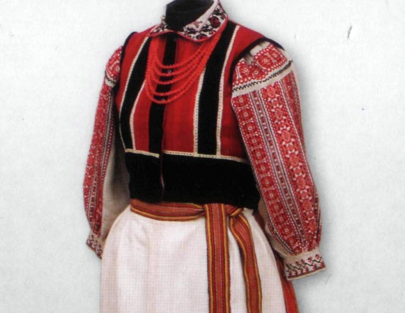

Мистецтво Полісся - вишивка.
|
 Поліський одяг з дитинства причарував геніальну поетесу Лесю Українку. У своєму рідному селі Колодяжному вона завжди носила народні строї. Поетеса захоплювалася орнаментами вишивки, розуміючи їх високий естетичний смак, глибоке осмислення народом поезії навколишньої природи, відчуваючи давню магію символів і знаків, що збереглись у вишивках. Мати поетеси Олена Пчілка звернула увагу на самобутність і красу вишивки й уперше в Україні видала альбом орнаментів вишивки Полісся, що вийшов друком 1877 року. Вишивали за волинсько-подільськими мотивами діти Олени Пчілки — Леся Українка та Ольга Кривинюк. В Київському літературно-меморіальному музеї Лесі Українки зберігаються клаптики домотканого полотна з родини Косачевих із зразками різних узорів вишивки рідного краю. Одна з вишитих сорочок Лесі Українки донині зберігається у Волинському краєзнавчому музеї. На Поліссі поширені жіночі сорочки, що густо призбируються навколо шиї, мають виложистий комір і чохли. Чоловічий костюм на Поліссі був дуже стриманий щодо оздоб. Святкове вбрання чоловіків складалось із сорочки, яка мала широку вишиту маніжку, стоячий або виложистий комір і чохли, на які рясно призбирували рукав сорочки. Здавна існує на Волинському Поліссі звичай прикрашати сорочки візерунковим ткацтвом, під впливом якого утворилася техніка шитва «занизування». Характерною особливістю цієї техніки є те, що вишивальна нитка протягується через усю довжину орнаменту, аналогічно шву «уперед голку». Вишивається, залежно від узору, горизонтальними паралельними стібками справа наліво до кінця ряду, а потім у зворотному напрямку. Основним, домінуючим завжди виступає червоний або вишневий колір, силу звучання якого підкреслюють синім або чорним. Орнаментальні мотиви геометричні і вкривають усе поле рукава. На полику й підопліччі орнамент лягає в горизонтальному напрямку, а нижче полика організовується у вертикальні смуги. Часто в оздоблених ткацтвом сорочках чохли й комір вишиваються дрібним хрестиком червоно-чорними квітковими мотивами. На відміну від орнаментів сорочок Середнього Подніпров'я, які мали ефект глибини простору, ажурності, на Поліссі орнамент на рукавах сорочок лягає площинно, вкриваючи все тло, вишивка виступає активно завдяки червоному кольору й технікам поверхневого шва — «занизування», «заволікання», «настилування». Для Житомирщини характерною є вишивка червоного з синім або чорним кольорами, що суцільно вкриває рукав сорочки. Поряд з «занизуванням» набуває поширення дрібний хрестик. В поліській вишивці використовуються нескладні орнаменти, які утворюються з ритмічного повтору окремих або вписаних один в другий ромбів, восьмикутних зірок, ламаних ліній. Особливе місце посідає мотив «осьмирожка». Розетка — основний і найпоширеніший мотив вишивок Полісся. Вона має чотири, шість і вісім загострених або заокруглених кінців, які поперемінно вишиваються червоним або чорним. Розетки чергуються із зображенням ромбів, кругів, зигзагів, хрестів у різних варіантах. Мотив хреста часто буває вписаний у ромби, прямокутники й має різне кольорове забарвлення — червоне або чорне чи синє. Часто у вишивці трапляється мотив птаха, іноді з деревом життя в центрі, із гілочками з ягід і листя. Інколи мотив птаха конкретизується до більш чіткого відтворення лебедя, орла, пави, качки. На Чернігівському Поліссі зафіксовано мотив пугача, зрідка грифонів, орлів, коней. З архаїчних мотивів побутують сильно стилізовані антропоморфні мотиви у вигляді ромба, які мають місцеву назву «на козака». Вирізняється поліська вишивка розміреним ритмом лаконічного за абрисами мотиву. Найулюбленішими в поліщуків є лінійні орнаменти, що складаються з ромбів, у середину яких вміщено геометричні розетки різної конфігурації. У вишивці Полісся зберігається багато геометричних фігур, від яких віє таємничою силою легенд і вірувань наших пращурів. Значна кількість геометричних орнаментальних мотивів, які збереглися, мали в давнину магічний зміст. Вишивки були своєрідними оберегами від злих сил. Однак з часом їхня семантика забулася, втратилося первісне значення. Вишивки слугували тільки художнім оздобленням. За асоціацією з яким-небудь предметом утвердилися нові назви: «волові очі», «оленячі голови», «баранячі роги». Поліські орнаменти не мають деталізованої внутрішньої розробки мотивів, застосування водночас кількох технік виконання. Основне емоційне навантаження належить червоному кольорові, який відіграє важливу роль і подається без напівтонів. Чергування червоного узору й білого тла доповнює вишивку додатковою ритмічністю і красою. Поліські майстрині досягали у вишивці безконечних варіацій одних і тих самих мотивів. На Західному Поліссі геометричні орнаменти комбінуються в бордюри, що розміщуються вздовж осьової лінії. Найчастіше це ритмічний повтор одного й того ж мотиву. Вільний простір між ними заповнюється половинками інших елементів. Так, якщо бордюр складається з ромбів, то простір між ними заповнюють трикутники або половинки розеток, утворюючи чудові за своєю красою узори. Орнаменти вкривають суцільно все поле рукавів жіночих сорочок, широкою смугою — маніжки в чоловічих. У вишивках Рівненської та Волинської областей переважають геометричні орнаменти, композиції яких утворюються з ритмічного повторення ромбів, ламаних ліній, восьмикутних зірок. Основний колір — червоний, іноді додавалася чорна або синя нитка. Київське й Чернігівське Полісся має також забарвлення вишивки в червоний колір, поширеною є техніка «занизування», що імітує візерункове ткацтво, а також «вирізування», ажурні мережки. В Київському та Чернігівському Поліссі поширеним було також шиття «білим», що поєднувалося з ажурними техніками «вирізування», та різноманітними мережками. Застосовували мотиви «терен», «виноград», «ключики». Типовий для Чернігівщини елемент ажурного поєднання двох частин сорочки за допомогою наскрізної мережки, так званої «чернігівської розшивки». Вирізняються вишивки Ковельського, Камінь-Каширського, Володимир-Волинського, Любомльського, Любешівського районів, а також вишивки північно-східної частини Волині. В селах Забужжя, Пульмо вишивали стрічковими узорами, утвореними з рядів ромбів, вписаних у прямокутники, що поперемінно вишивалися червоним і синім кольорами. Якщо північно-західний ареал виокремлюється вишивкою синьо-червоною з дрібними орнаментальними елементами, то узори Східного Полісся характерні червоно-чорним поєднанням кольорів і орнаментами масивних форм. У поліських районах Рівненської області побутувала вишивка білими нитками гладдю, «вирізуванням», «набіруванням», якою оздоблювали жіночі сорочки, рушники. На Поліссі використовували також «вирізування» й ажурні «розшивки» (техніка, при якій дві частини сорочки поєднуються між собою за допомогою наскрізної мережки). Різні елементи народного одягу виконувались усталеними техніками шиття. Так, уставки, манжети, коміри, пазухи жіночих, чоловічих сорочок виконувалися «заволікуванням», «занизуванням», а кожухи, свити — гладдю, «стебловим швом», «тамбуром» вишивали рушники. Хустки з білого лляного полотна мали на кутах велику китицю й ромбічний орнаментальний малюнок рельєфної вишивки в техніках гладьових швів. Поряд з давніми мотивами поширені рослинно-геометризовані мотиви «рожі», «берізки», «хміль», «барвінок», а також «гусячі лапки», «сливки», «старчики». Вони дають вишивальницям великі можливості у створенні цілісного художнього образу. В їх трактуванні завжди наявний зв'язок з живою природою, але вони вирішені умовно і стилізовано. Наприкінці XIX — на початку XX століття значного поширення набули мотиви троянди в червоно-чорній гамі, виконані в техніці хрестика. Хрестик — одна з найпоширеніших рахункових технік, вона найбільш легка, доступна у виконанні й перезніманні узорів. Завдяки цьому хрестик дає величезні можливості для кольорової розробки орнаментального мотиву — найчастіше в червоно-чорній гамі. Краса залежить від точного рахунку ниток тканини й діагонального перекриття верхніх стібків, які мають лягати в одному напрямку. На зламі XIX—XX століть в Україні відбувається кардинальна зміна художньо-образного вирішення народної вишивки. Пояснюється це поширенням техніки хрестика. Він відомий в Європі з XVIII століття, а в Росії та Україні — з початку XIX століття. Цією технікою вишивали в містах і панських маєтках різноманітні предмети інтер'єрного призначення: декоративні панно, оздоби на меблі, скатерки, серветки тощо. Здебільшого це були натюрморти, пишні букети з об'ємно-мальовничими формами квітів, багатою гамою колірних відтінків. У народному вишиванні ця техніка викликана появою нових рослинних натуралістичних мотивів у червоно-чорній гамі. Техніка хрестика поступово витісняє давні засоби шитва, сталу колористичну гаму, традиційні орнаментальні мотиви. Майстрині надають перевагу натуралістичним мотивам троянд, гвоздик, лілій, жоржин, хмелю, винограду, які поширюються через друковані взірці, дешеві альбоми з малюнками для вишивок у псевдонародному стилі. Замість традиційних орнаментів у вишивках з'являються різноманітні червоно-чорні квітки. Але поступово вишивальниці навчилися домагатися цілісності, ритмічного співвідношення білого тла і яскравої насиченої вишивки. Трансформація художньо-виразних засобів нових мотивів ішла від натуралізації, деталізації до дедалі більшого узагальнення, площинно-декоративного вирішення. Вміння майстринь творчо, індивідуально підійти до трактування узору унеможливило одноманітність, бо навіть однакові мотиви щоразу мали іншу інтерпретацію й осмислення. Мотиви, збагачені власною творчою фантазією вишивальниць, далеко відійшли од першоджерела й у кожній місцевості мали своє трактування. Так, на Київському Поліссі поширеними стають мотиви крупних форм, у яких кольори лягають суцільними площинами з переважанням червоного. На сорочках і рушниках все тло густо, як килим, заповнюється мотивами «калина», «копита», «паничі», «кропива» і вкривають все поле рукава, широкі нагрудні вишивки чоловічих сорочок — «маніжки». У Богуславському, Миронівському, Ржищівськом; районах розробка малюнка більш розріджена, чорний колір лише підкреслює й відтіняє переходи однієї форми в іншу. Орнаментальні мотиви «дощ», «перчики», «гвоздики», «берізка» створюють чіткий ритм і строгу симетрію в загальній композиційній схемі малюнка. На Чернігівщині рослинні мотиви укладаються в горизонтальні смуги орнаменту, з найбільш крупними мотивами внизу рушника. Техніка хрестика часто імітує традиційні шви як більш легкий і доступний засіб зображення. У зв'язку з цим на Київщині з'явилась «обманна мережка», на Чернігівщині її називали «фальшиве вирізування», широко побутувала ця техніка на Вінниччині. Вона справляє враження ажурної наскрізної техніки, яка полягає в тому, що напівхрестиком зашивається тло узору через один, а сам узор залишається білим і сприймається як орнамент. Рослинні узори, виконані цією технікою, втрачають натуралістичне трактування й набувають легкості й ажурності. У 30-х роках XX століття на території Київського Полісся поширилася так звана «писана», або «рисована», техніка шитва. Це умовно вирішені рослинні орнаменти з різноманітних за формою листочків, пуп'янків, квітів. Техніка, нагадуючи гладь, має ту особливість, що попередньо на полотні вільно, від руки, малюється майбутній малюнок. Форми окремих елементів усуціль зашиваються червоним кольором, надаючи їм площинності й підкреслюючи декоративність. Іноді контур червоної квітки обводиться чорним, завдяки чому весь малюнок набуває чіткості, графічної виразності. Вишивка «писаних» сорочок і рушників потребувала особливого вміння й художнього смаку. У кожному селі були свої найкращі вишивальниці. Так, у селі Болотня уславилася мати народної художниці Марії Приймаченко Параска Василівна. В дитинстві вона також малювала односельцям узори на рушник» й сорочки. |